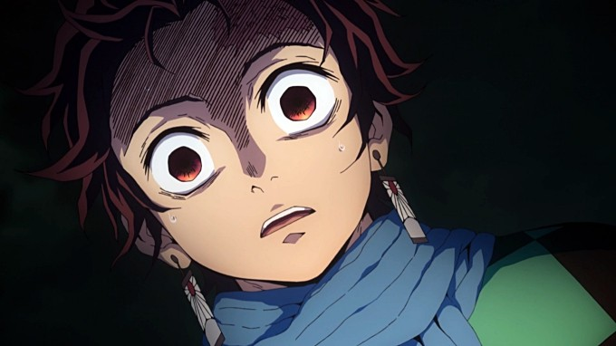

The anime starts with the young Teenager “Tanjiro Kamado”. After his father passes away, Tanjiro takes the responsibility of earning and helping the house. That is when he goes to another village to sell charcoal. Later that day his whole family is slaughtered by Demons.
The survivors of the slaughter are Tanjiro and her sister Nezuko who is possessed by a Demon and yet shows Human emotions. He wants to save her sister from the Demon. When he is running away with his sister from the village a Demon Slayer tries to kill her sister because she has become a Demon.

Tanjiro defends his sister and proves that Nezuko didn’t completely transform into a demon. The demon slayer suggests that a best way to save her sister from other Demon Slayers is to become a Demon Slayer himself and defend her. Giyu sends him to the Urokodaki, a former Demon slayer from there his journey starts and takes some twists while saving his sister. To become a Demon Slayer one needs exceptional Human strength and techniques. And one also has to master the Breathing technique.
This is only the beginning. The story conitnues to take you through a majical adveture through msytical forests and cities. For more information about main Portagonist and Antagonist view the tables below.
| Main Protagonist | ||
|---|---|---|
| Demon slayer | Breathing style/Demon Art | |
| Tanjiro Kamado | Sun Breathing | |
| Nezuko Kamado | Blood Demon Art of pyrokinesis | |
| Zenitsu Agatsuma | Ligthing Breathing | |
| Kanao Tsuyuri | Flower Breating | |
| Genya Shinazugawa | Water Breathing | |
| Hashira Inosuke | Beast Breathing | |
| Main Antagonist | |
|---|---|
| Demon | Demon Art |
| Muzan Kibutsuji | Biokinesis |
| Akaza | Jutsushiki Tenkai |
| Doma | Cryokinesis |
| Gyutaro | Flying Blood Sickles |
| Daki | Kekkijutsu |